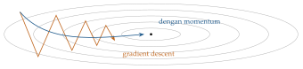

Bab 2
Optimasi: Turun Gunung dalam Kabut
Optimizer sudah saya pakai sejak tugas deep learning di semester pertama, tetapi teorinya baru dibahas secara sistematis di semester terakhir, di kuliah optimasi numerik: mengapa gradient descent bisa lambat, kapan ia pasti konvergen, dan apa yang dibeli metode Newton dengan biaya yang mahal. Bab ini menggabungkan kedua sisi itu.
Bab sebelumnya berakhir dengan perintah “minimalkan risiko empiris”. Sekarang kita membahas cara melakukannya. Hampir semua model di buku ini, dari regresi linear sampai PINN, dilatih dengan varian dari satu gagasan: ikuti arah turunan.
Bayangkan Anda berdiri di lereng gunung yang tertutup kabut tebal. Anda ingin turun ke lembah, tetapi hanya bisa melihat tanah di sekitar kaki. Strategi paling masuk akal adalah merasakan ke arah mana tanah paling curam menurun, melangkah ke sana, lalu mengulanginya. Inilah gradient descent. Persoalannya ada pada panjang langkah. Langkah yang terlalu kecil membuat Anda baru sampai besok pagi. Langkah yang terlalu besar membuat Anda melompati lembah dan mendarat di lereng seberang, bahkan lebih tinggi dari tempat semula.
Masalah dan syarat optimalitas
Kita mencari \(\boldsymbol{x}^*=\operatorname*{arg\,min}_{\boldsymbol{x}\in\mathbb{R}^N}f(\boldsymbol{x})\) untuk fungsi \(f\) yang cukup mulus. Dua syarat klasik membantu mengenali minimum. Kalau \(\boldsymbol{x}^*\) minimum lokal, gradiennya pasti nol, \(\nabla f(\boldsymbol{x}^*)=\boldsymbol0\). Sebaliknya, kalau gradiennya nol dan Hessian \(\nabla^2f(\boldsymbol{x}^*)\) definit positif, maka \(\boldsymbol{x}^*\) pasti minimum lokal yang tegas. Titik dengan gradien nol disebut stationary point, dan ia bisa berupa minimum, maksimum, atau saddle point. Di dimensi tinggi, saddle point jauh lebih banyak daripada minimum, karena untuk menjadi minimum semua nilai eigen Hessian harus positif sekaligus.
Fungsi \(f\) disebut convex kalau ruas garis yang menghubungkan dua titik di grafiknya selalu berada di atas grafik itu, yaitu \(f(\lambda\boldsymbol{x}+(1-\lambda)\boldsymbol{y})\le\lambda f(\boldsymbol{x})+(1-\lambda)f(\boldsymbol{y})\) untuk setiap \(\lambda\in[0,1]\). Untuk fungsi konveks, setiap minimum lokal adalah minimum global. Regresi linear dengan loss kuadrat, regresi logistik, dan lasso semuanya konveks. Jaringan saraf tidak. Meski begitu, teori konveks tetap berguna, karena di sekitar sebuah minimum hampir semua fungsi mulus terlihat seperti mangkuk kuadrat.
Fungsi uji klasik yang tidak konveks adalah fungsi Rosenbrock (Rosenbrock 1960), \(f(x,y)=(1-x)^2+100(y-x^2)^2\). Minimumnya di \((1,1)\), tersembunyi di dasar lembah sempit berbentuk pisang. Menemukan lembahnya mudah. Yang sulit adalah berjalan menyusuri lembah itu sampai ke titik terendahnya.
Gradient descent
Aturan dasarnya adalah \[\boldsymbol{x}_{k+1}=\boldsymbol{x}_k-\alpha_k\,\nabla f(\boldsymbol{x}_k),\] dengan \(\alpha_k>0\) panjang langkah atau learning rate. Arah negatif gradien dipilih karena ekspansi Taylor orde satu, \(f(\boldsymbol{x}+\boldsymbol h)\approx f(\boldsymbol{x})+\nabla f(\boldsymbol{x})^\top\boldsymbol h\), paling cepat turun kalau \(\boldsymbol h\) searah \(-\nabla f(\boldsymbol{x})\).
Kapan langkah-langkah ini dijamin menuju minimum? Anggap gradien \(f\) bersifat Lipschitz dengan konstanta \(L\), artinya \(\|\nabla f(\boldsymbol{x})-\nabla f(\boldsymbol{y})\|\le L\|\boldsymbol{x}-\boldsymbol{y}\|\). Konstanta \(L\) mengukur seberapa cepat kemiringan bisa berubah. Dengan langkah tetap \(\alpha=1/L\), setiap iterasi menjamin \[f(\boldsymbol{x}_{k+1})\le f(\boldsymbol{x}_k)-\frac{1}{2L}\|\nabla f(\boldsymbol{x}_k)\|^2,\] jadi selama gradien belum nol, nilai fungsi pasti turun.
Ketaksamaan ini, yang di naskah kuliah disebut descent lemma, bisa diturunkan dalam dua baris. Gradien yang Lipschitz berarti fungsi tidak bisa melengkung ke atas lebih cepat dari sebuah parabola dengan kelengkungan \(L\), sehingga untuk setiap \(\boldsymbol h\), \[f(\boldsymbol{x}+\boldsymbol h)\le f(\boldsymbol{x})+\nabla f(\boldsymbol{x})^\top\boldsymbol h+\frac L2\|\boldsymbol h\|^2.\] Ruas kanan adalah parabola yang selalu berada di atas fungsi. Masukkan langkah gradient descent, \(\boldsymbol h=-\alpha\nabla f(\boldsymbol{x})\), sehingga ruas kanan menjadi \(f(\boldsymbol{x})-\alpha\big(1-\tfrac{L\alpha}2\big)\|\nabla f(\boldsymbol{x})\|^2\). Penurunan terbesar didapat dengan memaksimalkan \(\alpha(1-L\alpha/2)\), yang terjadi pada \(\alpha=1/L\), dan nilainya \(1/(2L)\). Dari sini juga terlihat batas atas langkah: kalau \(\alpha\ge2/L\), faktor \(1-L\alpha/2\) menjadi nol atau negatif, dan jaminan penurunannya hilang.
Kalau \(f\) juga strongly convex dengan konstanta \(\mu\), galat menyusut secara geometris dengan laju yang ditentukan oleh condition number \(\kappa=L/\mu\).
Contoh kecil memperlihatkan arti condition number. Ambil \(f(x_1,x_2)=\tfrac12(x_1^2+100x_2^2)\). Gradiennya \((x_1,\,100x_2)\), sehingga \(L=100\), \(\mu=1\), dan \(\kappa=100\). Dengan langkah tetap \(\alpha\), kedua koordinat berkembang terpisah: \(x_1\) dikalikan \((1-\alpha)\) dan \(x_2\) dikalikan \((1-100\alpha)\) di setiap langkah. Supaya \(x_2\) tidak meledak, kita butuh \(|1-100\alpha|<1\), yang berarti \(\alpha<0{,}02\). Tetapi dengan langkah sekecil itu, \(x_1\) hanya menyusut dengan faktor sekitar \(0{,}98\). Bahkan dengan langkah terbaik, \(\alpha=2/(L+\mu)\), faktor terburuknya \((\kappa-1)/(\kappa+1)=99/101\). Untuk mengecilkan galat sejuta kali, dibutuhkan kira-kira \(\ln(10^{-6})/\ln(99/101)\approx690\) langkah. Metode Newton menyelesaikan masalah kuadrat yang sama dalam satu langkah.
Itulah inti masalah optimasi dalam praktik. Gradient descent lambat bukan karena fungsinya rumit, melainkan karena skala arah-arahnya berbeda jauh. Pada lembah yang lonjong, lintasannya berzig-zag menyeberangi lembah alih-alih berjalan menyusurinya (Gambar 2.1).

Line search
Daripada menebak \(\alpha\) sekali untuk selamanya, kita bisa mencarinya di setiap iterasi. Line search mencoba beberapa panjang langkah sepanjang arah turun \(\boldsymbol d_k\) dan menerima yang pertama dianggap cukup baik. Ukuran “cukup baik” yang paling umum adalah syarat Armijo (Armijo 1966), \[f(\boldsymbol{x}_k+\alpha\boldsymbol d_k)\le f(\boldsymbol{x}_k)+c\,\alpha\,\nabla f(\boldsymbol{x}_k)^\top\boldsymbol d_k,\qquad 0<c<1,\] yang meminta agar penurunan nyata setidaknya sebagian kecil dari penurunan yang dijanjikan oleh garis singgung. Prosedur backtracking memulai dari \(\alpha=1\) lalu terus mengalikannya dengan sebuah faktor \(\beta\in(0,1)\) sampai syarat itu terpenuhi. Di deep learning, line search jarang dipakai, karena setiap evaluasi \(f\) berarti melewati seluruh data. Gagasannya muncul kembali dalam L-BFGS.
Metode Newton dan kerabatnya
Metode Newton memanfaatkan kelengkungan. Ia meminimalkan model kuadrat lokal \(f(\boldsymbol{x}_k)+\nabla f^\top\boldsymbol h+\tfrac12\boldsymbol h^\top\nabla^2f\,\boldsymbol h\), yang menghasilkan \[\boldsymbol{x}_{k+1}=\boldsymbol{x}_k-\big[\nabla^2 f(\boldsymbol{x}_k)\big]^{-1}\nabla f(\boldsymbol{x}_k).\] Di dekat minimum yang Hessian-nya definit positif, Newton konvergen secara kuadratik: jumlah digit yang benar kira-kira berlipat dua di setiap iterasi. Ada tiga hal yang membatasinya. Hessian berukuran \(N\times N\), sehingga untuk jaringan dengan ratusan juta parameter, menyimpannya saja sudah mustahil. Jauh dari minimum, Hessian bisa tidak definit dan langkah Newton justru menanjak. Kuliah menyebut perbaikannya Hessian modification, yaitu menambahkan \(\lambda\boldsymbol I\) sampai matriksnya definit positif. Terakhir, Newton tertarik ke titik mana pun yang gradiennya nol, termasuk saddle point.
Metode quasi-Newton seperti BFGS, dan versi hemat memorinya L-BFGS, membangun aproksimasi Hessian dari selisih gradien beberapa iterasi terakhir (Nocedal dan Wright 2006). L-BFGS populer untuk masalah deterministik berukuran sedang, termasuk tahap akhir pelatihan PINN.
Stochastic gradient descent
Dalam machine learning, \(f\) adalah rata-rata loss atas \(N\) contoh, jadi menghitung gradien penuh berarti melewati seluruh data. Stochastic gradient descent (SGD) menggantinya dengan gradien dari sebuah mini-batch acak berukuran \(B\): \[\boldsymbol{w}_{k+1}=\boldsymbol{w}_k-\alpha_k\,\frac1B\sum_{n\in\mathcal B_k}\nabla_{\boldsymbol{w}}L\big(y_n,f(\boldsymbol{x}_n;\boldsymbol{w}_k)\big).\] Gradien mini-batch adalah estimator tak bias dari gradien penuh, tetapi berisik. Teorinya berakar pada stochastic approximation (Robbins dan Monro 1951): agar iterasi konvergen, panjang langkah harus mengecil dengan syarat \(\sum_k\alpha_k=\infty\) dan \(\sum_k\alpha_k^2<\infty\). Syarat pertama menjamin kita masih bisa berjalan sejauh apa pun, syarat kedua menjamin noise akhirnya teredam.
Untuk mengetahui harga rata-rata beras di seluruh kota, Anda bisa mendatangi semua warung, atau bertanya ke sepuluh warung yang dipilih acak. Jawaban sepuluh warung tidak tepat, tetapi didapat jauh lebih cepat. Kalau survei kecil itu diulang terus dan tebakan disesuaikan sedikit demi sedikit, Anda sampai ke angka yang benar lebih cepat daripada menunggu satu survei besar. SGD bekerja dengan cara yang sama.
Noise SGD ternyata bukan sekadar kekurangan. Ia membuat iterasi terus bergoyang dan sulit bertahan di minimum yang sempit. Hochreiter dan Schmidhuber (1997) berargumen bahwa minimum yang datar generalisasi lebih baik, karena perubahan kecil pada bobot tidak banyak mengubah loss, sehingga bobotnya bisa dideskripsikan dengan presisi lebih rendah dan modelnya efektif lebih sederhana. Keskar dkk. (2016) mengamati bahwa batch yang besar cenderung berakhir di minimum tajam dengan generalisasi lebih buruk. Kuliah deep learning menyebut efek ini self-regularization oleh SGD.
Momentum dan metode adaptif
Metode heavy ball dari Polyak (1964) menambahkan ingatan tentang arah sebelumnya, \[\boldsymbol v_{k+1}=\beta\,\boldsymbol v_k-\alpha\,\nabla f(\boldsymbol{x}_k),\qquad \boldsymbol{x}_{k+1}=\boldsymbol{x}_k+\boldsymbol v_{k+1},\] dengan \(\beta\) biasanya sekitar \(0{,}9\). Komponen gradien yang berganti tanda setiap langkah saling meniadakan di dalam \(\boldsymbol v\), sedangkan komponen yang konsisten menumpuk. Gradient descent biasa mirip orang yang berhenti total di setiap langkah lalu melihat lagi ke mana arah turun. Momentum mirip bola yang menggelinding: ia membawa kecepatannya, tidak langsung berbalik karena satu gundukan kecil, dan melaju lebih cepat di lereng yang panjang. Zig-zag di Gambar 2.1 teredam dengan cara ini.
Masalah condition number juga bisa diserang dengan memberi setiap parameter laju belajarnya sendiri. AdaGrad membagi langkah dengan akar jumlah kuadrat gradien masa lalu, RMSProp memakai rata-rata bergerak agar pembagi itu tidak terus membesar, dan Adam (Kingma dan Ba 2014) menggabungkan momentum dengan RMSProp: \[\begin{aligned} \boldsymbol m_k &= \beta_1\boldsymbol m_{k-1}+(1-\beta_1)\boldsymbol g_k, & \boldsymbol v_k &= \beta_2\boldsymbol v_{k-1}+(1-\beta_2)\boldsymbol g_k^2,\\ \hat{\boldsymbol m}_k &= \frac{\boldsymbol m_k}{1-\beta_1^k},\quad \hat{\boldsymbol v}_k=\frac{\boldsymbol v_k}{1-\beta_2^k}, & \boldsymbol{w}_{k+1} &= \boldsymbol{w}_k-\alpha\,\frac{\hat{\boldsymbol m}_k}{\sqrt{\hat{\boldsymbol v}_k}+\epsilon}. \end{aligned}\] Semua operasinya per elemen, dengan nilai bawaan \(\beta_1=0{,}9\), \(\beta_2=0{,}999\), dan \(\epsilon=10^{-8}\). Faktor \(1-\beta^k\) disebut bias correction, dan asalnya mudah ditelusuri. Membuka rekursi \(\boldsymbol m_k\) dari \(\boldsymbol m_0=\boldsymbol0\) memberi \(\boldsymbol m_k=(1-\beta_1)\sum_{j=1}^k\beta_1^{k-j}\boldsymbol g_j\). Kalau gradien punya ekspektasi tetap \(\mathbb{E}[\boldsymbol g]\), maka \[\mathbb{E}[\boldsymbol m_k]=(1-\beta_1)\big(1+\beta_1+\cdots+\beta_1^{k-1}\big)\mathbb{E}[\boldsymbol g]=(1-\beta_1^k)\,\mathbb{E}[\boldsymbol g],\] karena deret geometri berhingga \(\sum_{j=0}^{k-1}\beta_1^j=(1-\beta_1^k)/(1-\beta_1)\). Jadi \(\boldsymbol m_k\) bias ke bawah dengan faktor tepat \(1-\beta_1^k\), dan membaginya dengan faktor itu menghapus bias. Pada langkah pertama dengan \(\beta_1=0{,}9\), \(\boldsymbol m_1=0{,}1\,\boldsymbol g_1\), sepuluh kali terlalu kecil, dan koreksi mengembalikannya ke \(\boldsymbol g_1\). Untuk \(\beta_2=0{,}999\), faktornya pada langkah pertama \(0{,}001\), sehingga tanpa koreksi langkah awal Adam akan besar sekali dan tidak menentu. Setelah beberapa ribu langkah, kedua faktor mendekati satu dan koreksinya tidak berpengaruh lagi.
Beberapa salah paham tentang Adam cukup umum. Adam tidak selalu lebih baik dari SGD. Untuk beberapa tugas visi, SGD dengan momentum dan jadwal laju belajar yang baik masih menghasilkan generalisasi yang lebih baik. Menambahkan suku L2 ke loss lalu memakai Adam juga tidak sama dengan weight decay, karena suku itu ikut dibagi \(\sqrt{\hat{\boldsymbol v}}\) sehingga efeknya tidak seragam antar parameter. AdamW memisahkan weight decay dari langkah adaptif untuk mengatasi hal ini (Loshchilov dan Hutter 2017).
Laju belajar yang tetap pun jarang optimal. Pola yang umum adalah warm-up, yaitu mulai kecil dan naik selama beberapa ratus langkah, lalu menurun perlahan, misalnya mengikuti kurva kosinus. Warm-up mencegah langkah awal yang terlalu agresif ketika statistik Adam belum stabil.
Lanskap loss jaringan dalam
Lanskap loss jaringan dalam ternyata berbeda dari intuisi dimensi rendah. Untuk fungsi acak di dimensi tinggi, sebagian besar titik kritis dengan loss tinggi adalah saddle point, dan minimum lokal cenderung punya nilai loss yang mirip satu sama lain. Pada jaringan yang sangat lebar, ada banyak sekali solusi yang sama-sama mencapai loss latih hampir nol, dan solusi-solusi itu sering terhubung oleh lembah dengan loss rendah. Pertanyaan pentingnya pun bergeser, dari “apakah kita menemukan minimum global?” menjadi “minimum mana yang dipilih, dan apakah ia generalisasi?”.
Optimasi di luar kelas
Contoh mangkuk lonjong di atas bukan sekadar latihan. Masalah condition number yang sama muncul di banyak tempat dalam buku ini dengan nama yang berbeda. Filter adaptif LMS dalam pemrosesan sinyal adalah SGD dengan mini-batch satu sampel, dan kecepatan konvergensinya ditentukan oleh sebaran nilai eigen matriks autokorelasi input (Bab 14). Algoritme RLS, yang memperbarui invers matriks itu, adalah kerabat metode Newton. Faktorisasi matriks dalam sistem rekomendasi dilatih dengan SGD (Bab 30), dan model molekul dilatih dengan Adam seperti jaringan lain.
Di simulasi, loss sebuah PINN adalah jumlah beberapa suku: residu persamaan diferensial, syarat batas, syarat awal, dan data. Suku-suku ini punya skala dan kelengkungan yang jauh berbeda, sehingga condition number masalahnya buruk sekali. Wang, Teng, dan Perdikaris (2021) menunjukkan bahwa gradien suku residu bisa mendominasi suku batas, sehingga jaringan memenuhi persamaan di dalam domain tetapi melupakan syarat batasnya. Resep yang sering dipakai adalah memulai dengan Adam untuk keluar dari daerah awal yang buruk, melanjutkan dengan L-BFGS untuk turun tajam ke minimum, dan menyeimbangkan bobot suku-suku loss secara adaptif (Bab 25).
Catatan sumber.
Teori konvergensi, line search, dan metode Newton mengikuti naskah kuliah Numerical Optimization for AI. Bagian SGD, momentum, dan optimizer adaptif mengikuti bab metode belajar di kuliah deep learning dasar. Bacaan lanjut: Nocedal dan Wright (2006) untuk optimasi klasik dan Bottou, Curtis, dan Nocedal (2018) untuk optimasi skala besar dalam machine learning.